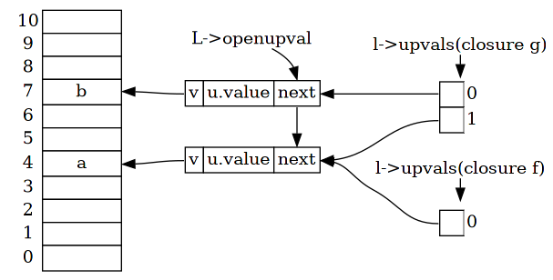
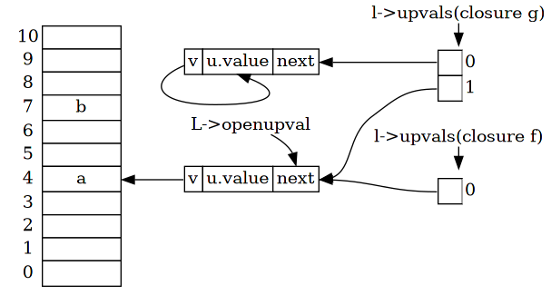

vm
代码生成完成之后，整个文件分析成为一个单独的 Proto，交由 vm 来执行。
和 parser 相比，vm 更容易琢磨，因为它只会从 Proto 中取出字节码， 并按照指令的含义一行一行来执行。
所以各种指令的执行过程不是本章的重点，只需要参考 opcode 相应的注释就不难理解， 本章更关注 vm 内部各个组件的协同过程。
1 model
之前在 opcode 章节简单提到了 vm 内部的模型，这里来详细讨论各个部分。

1.1 code
vm 所执行的代码来自 parser，即存储在 Proto 中。
228: /* 229: ** Function Prototypes 230: */ 231: typedef struct Proto { 232: CommonHeader; 233: TValue *k; /* constants used by the function */ 234: Instruction *code; 235: struct Proto **p; /* functions defined inside the function */ 236: int *lineinfo; /* map from opcodes to source lines */ 237: struct LocVar *locvars; /* information about local variables */
84: /* 85: ** type for virtual-machine instructions 86: ** must be an unsigned with (at least) 4 bytes (see details in lopcodes.h) 87: */ 88: typedef lu_int32 Instruction;
Proto.code 是指令数组，索引从 0 开始，存储了所有生成的指令。
vm 在执行的时候，内部存在一个 pc 指针，指向当前要执行指令。
这个 pc 和代码生成阶段的 pc 是完全不同的，代码生成阶段的 pc 用来标识生成指令的下一个索引， 而 vm 在运行阶段的 pc 是一个指针。
377: void luaV_execute (lua_State *L, int nexeccalls) { 378: LClosure *cl; 379: StkId base; 380: TValue *k; 381: const Instruction *pc;
1.2 kst
k 表在分析阶段，收集了所有常量，并提供索引供指令使用。
所以在执行指令的时候，需要 k 表的配合来引用常量，vm 中直接用 TValue *k 引用 Proto 中的 k 表。
377: void luaV_execute (lua_State *L, int nexeccalls) { 378: LClosure *cl; 379: StkId base; 380: TValue *k; 381: const Instruction *pc; 382: reentry: /* entry point */ 383: lua_assert(isLua(L->ci)); 384: pc = L->savedpc; 385: cl = &clvalue(L->ci->func)->l; 386: base = L->base; 387: k = cl->p->k;
1.3 stack
在代码生成阶段，parser 只能操作一个“想象”中的栈，而在 vm 中则是具体实现了它。
stack 的本质是一个 TValue 数组，通过 StkId 引用栈中元素。
193: typedef TValue *StkId; /* index to stack elements */
栈及栈的相应状态，存储在 lua_State 中，同 FuncState LexState 一样，
lua_State 也是用于记录状态的结构，具体的说，就是用来记录线程运行时的状态。
97: /* 98: ** `per thread' state 99: */ 100: struct lua_State { 101: CommonHeader; 102: lu_byte status; 103: StkId top; /* first free slot in the stack */ 104: StkId base; /* base of current function */ 105: global_State *l_G; 106: CallInfo *ci; /* call info for current function */ 107: const Instruction *savedpc; /* `savedpc' of current function */ 108: StkId stack_last; /* last free slot in the stack */ 109: StkId stack; /* stack base */ 110: CallInfo *end_ci; /* points after end of ci array*/ 111: CallInfo *base_ci; /* array of CallInfo's */ 112: int stacksize; 113: int size_ci; /* size of array `base_ci' */ 114: unsigned short nCcalls; /* number of nested C calls */ 115: unsigned short baseCcalls; /* nested C calls when resuming coroutine */ 116: lu_byte hookmask; 117: lu_byte allowhook; 118: int basehookcount; 119: int hookcount; 120: lua_Hook hook; 121: TValue l_gt; /* table of globals */ 122: TValue env; /* temporary place for environments */ 123: GCObject *openupval; /* list of open upvalues in this stack */ 124: GCObject *gclist; 125: struct lua_longjmp *errorJmp; /* current error recover point */ 126: ptrdiff_t errfunc; /* current error handling function (stack index) */ 127: };
其中
lu_byte status，线程状态StkId top，函数调用时的栈顶指针StkId base，函数调用时的栈基指针global_State *l_G，指向 global stateCallInfo *ci，当前 CallInfoconst Instruction *savedpc，暂存指令位置StkId stack_last，栈空间的最后StkId stack，栈指针CallInfo *end_ci，CallInfo 数组的最后CallInfo *base_ci，CallInfo 数组的开始int statcksize，栈空间大小int size_ci，CallInfo 数组的大小TValue l_gt，Gbl 表TValue env，临时存储环境
至于 CallInfo，在后续函数调用章节再讲解。
1.4 gbl
Gbl 表用于记录 lua 线程的全局变量，存储在 lua_State.l_gt 中，
是一个 table 结构。
setglobal/getglobal 指令就作用于这里。
1.5 upvalue
upvalue 是一个数组，元素为 UpVal * ，存在于每一个 closure 中。
302: typedef struct LClosure { 303: ClosureHeader; 304: struct Proto *p; 305: UpVal *upvals[1]; 306: } LClosure;
270: /* 271: ** Upvalues 272: */ 273: 274: typedef struct UpVal { 275: CommonHeader; 276: TValue *v; /* points to stack or to its own value */ 277: union { 278: TValue value; /* the value (when closed) */ 279: struct { /* double linked list (when open) */ 280: struct UpVal *prev; 281: struct UpVal *next; 282: } l; 283: } u; 284: } UpVal;
对于每一个 Proto，在执行前都会封装为 closure，
723: case OP_CLOSURE: { 724: Proto *p; 725: Closure *ncl; 726: int nup, j; 727: p = cl->p->p[GETARG_Bx(i)]; 728: nup = p->nups; 729: ncl = luaF_newLclosure(L, nup, cl->env); 730: ncl->l.p = p; 731: for (j=0; j<nup; j++, pc++) { 732: if (GET_OPCODE(*pc) == OP_GETUPVAL) 733: ncl->l.upvals[j] = cl->upvals[GETARG_B(*pc)]; 734: else { 735: lua_assert(GET_OPCODE(*pc) == OP_MOVE); 736: ncl->l.upvals[j] = luaF_findupval(L, base + GETARG_B(*pc)); 737: } 738: } 739: setclvalue(L, ra, ncl); 740: Protect(luaC_checkGC(L)); 741: continue;
其中调用 luaF_newLclosure 来执行，其中为 upvalue 数组开辟了空间，
数组元素是 UpVal * 指针类型，具体指向在运行时确定。
33: Closure *luaF_newLclosure (lua_State *L, int nelems, Table *e) { 34: Closure *c = cast(Closure *, luaM_malloc(L, sizeLclosure(nelems))); 35: luaC_link(L, obj2gco(c), LUA_TFUNCTION); 36: c->l.isC = 0; 37: c->l.env = e; 38: c->l.nupvalues = cast_byte(nelems); 39: while (nelems--) c->l.upvals[nelems] = NULL; 40: return c; 41: }
前面提到，整个文件作为一个匿名函数来分析，最终得到 Proto 交由 vm 执行， 同样的原则，这个 Proto 在执行之前，需要封装为 closure，
491: static void f_parser (lua_State *L, void *ud) { 492: int i; 493: Proto *tf; 494: Closure *cl; 495: struct SParser *p = cast(struct SParser *, ud); 496: int c = luaZ_lookahead(p->z); 497: luaC_checkGC(L); 498: tf = ((c == LUA_SIGNATURE[0]) ? luaU_undump : luaY_parser)(L, p->z, 499: &p->buff, p->name); 500: cl = luaF_newLclosure(L, tf->nups, hvalue(gt(L))); 501: cl->l.p = tf; 502: for (i = 0; i < tf->nups; i++) /* initialize eventual upvalues */ 503: cl->l.upvals[i] = luaF_newupval(L); 504: setclvalue(L, L->top, cl); 505: incr_top(L); 506: }
2 the loop
vm 执行 closure 的入口为 luaV_execute ，
377: void luaV_execute (lua_State *L, int nexeccalls) { 378: LClosure *cl; 379: StkId base; 380: TValue *k; 381: const Instruction *pc; 382: reentry: /* entry point */ 383: lua_assert(isLua(L->ci)); 384: pc = L->savedpc; 385: cl = &clvalue(L->ci->func)->l; 386: base = L->base; 387: k = cl->p->k; 388: /* main loop of interpreter */ 389: for (;;) { 390: const Instruction i = *pc++; 391: StkId ra; 392: if ((L->hookmask & (LUA_MASKLINE | LUA_MASKCOUNT)) && 393: (--L->hookcount == 0 || L->hookmask & LUA_MASKLINE)) { 394: traceexec(L, pc); 395: if (L->status == LUA_YIELD) { /* did hook yield? */ 396: L->savedpc = pc - 1; 397: return; 398: } 399: base = L->base; 400: } 401: /* warning!! several calls may realloc the stack and invalidate `ra' */ 402: ra = RA(i); 403: lua_assert(base == L->base && L->base == L->ci->base); 404: lua_assert(base <= L->top && L->top <= L->stack + L->stacksize); 405: lua_assert(L->top == L->ci->top || luaG_checkopenop(i)); 406: switch (GET_OPCODE(i)) { 407: case OP_MOVE: { 408: setobjs2s(L, ra, RB(i)); 409: continue; 410: } 411: case OP_LOADK: { 412: setobj2s(L, ra, KBx(i)); 413: continue;
- line 389，内部是一个死循环
- line 390，默认自增 pc，从中取出指令
- line 406，根据指令的类型，执行对应的操作
大部分指令的操作都非常简单，对应 opcode 的语义注释就可以理解。
下面只针对重要的部分，vm 是如何运行 closure 的。
3 closure
在编译时，并没有涉及到 closure 结构，作为 8 种基础类型之一，closure 结构在运行时发挥作用。
287: /* 288: ** Closures 289: */ 290: 291: #define ClosureHeader \ 292: CommonHeader; lu_byte isC; lu_byte nupvalues; GCObject *gclist; \ 293: struct Table *env 294: 295: typedef struct CClosure { 296: ClosureHeader; 297: lua_CFunction f; 298: TValue upvalue[1]; 299: } CClosure; 300: 301: 302: typedef struct LClosure { 303: ClosureHeader; 304: struct Proto *p; 305: UpVal *upvals[1]; 306: } LClosure; 307: 308: 309: typedef union Closure { 310: CClosure c; 311: LClosure l; 312: } Closure; 313: 314: 315: #define iscfunction(o) (ttype(o) == LUA_TFUNCTION && clvalue(o)->c.isC) 316: #define isLfunction(o) (ttype(o) == LUA_TFUNCTION && !clvalue(o)->c.isC)
Closure 是 union 类型，容纳 C Closure 和 Lua Closure 两种类型，C Closure 之后再讲解， 这里只看 Lua Closure。
lu_byte isC，标识 Closure 是 C 还是 Lualu_byte nupvalues，拥有 upvalue 的数量struct Table *env，函数运行环境，等同于 gbl 表struct Proto *p，指向 parser 生成的 ProtoUpval *upvals[1]，为 upvalue 分配的空间
3.1 def
回忆 parser 中 function 的定义过程，解析 function 定义的过程是递归， 生成相应的 Proto 并链接到上层 Proto.p 中。
所以在 vm 中和 function 定义相关的功能，只有使用 closure 指令进行封装这一步。
723: case OP_CLOSURE: { 724: Proto *p; 725: Closure *ncl; 726: int nup, j; 727: p = cl->p->p[GETARG_Bx(i)]; 728: nup = p->nups; 729: ncl = luaF_newLclosure(L, nup, cl->env); 730: ncl->l.p = p; 731: for (j=0; j<nup; j++, pc++) { 732: if (GET_OPCODE(*pc) == OP_GETUPVAL) 733: ncl->l.upvals[j] = cl->upvals[GETARG_B(*pc)]; 734: else { 735: lua_assert(GET_OPCODE(*pc) == OP_MOVE); 736: ncl->l.upvals[j] = luaF_findupval(L, base + GETARG_B(*pc)); 737: } 738: } 739: setclvalue(L, ra, ncl); 740: Protect(luaC_checkGC(L)); 741: continue; 742: }
line 729 为 closure 结构分配空间。
line 731 - 738 是比较有意思的地方，还记得指令生成时，对 upvalue 的约定吗？
VLOCAL 使用 move 指令，VUPVAL 使用 getupval 指令，这里根据 upvalue 的数量， 向下读取相应数量的指令，初始化 upvalue。
详细到下面的 upval 小节解析。
line 739 将封装生成的 closure 赋值给变量。
3.2 call
介绍函数调用之前，先来了解一下 CallInfo 结构。
整个线程的栈记录着计算的状态，函数调用具有天生的栈特性， 调用前入栈，调用后出栈。
CallInfo 就是用来记录函数调用对应栈的位置的。
45: /* 46: ** informations about a call 47: */ 48: typedef struct CallInfo { 49: StkId base; /* base for this function */ 50: StkId func; /* function index in the stack */ 51: StkId top; /* top for this function */ 52: const Instruction *savedpc; 53: int nresults; /* expected number of results from this function */ 54: int tailcalls; /* number of tail calls lost under this entry */ 55: } CallInfo;
- func，指向调用的函数本身
- base，指向调用函数对应的栈基地址
- top，指向调用函数对应的栈顶地址
lua_State 中，存在着一个 CallInfo 数组，索引从 0 开始，记录着函数调用的层次。
base_ci 指向索引 0， end_ci 指向最后， ci 指向当前的函数调用层次。
每当遇到新的函数调用，ci 自增；调用结束，ci 自减。
具体来看一个示例，
local function f() end f(1, 2, 3)
; function [0] definition (level 1) ; 0 upvalues, 0 params, 2 is_vararg, 5 stacks .function 0 0 2 5 .local "f" ; 0 .const 1 ; 0 .const 2 ; 1 .const 3 ; 2 ; function [0] definition (level 2) ; 0 upvalues, 0 params, 0 is_vararg, 2 stacks .function 0 0 0 2 [1] return 0 1 ; end of function [1] closure 0 0 ; 0 upvalues [2] move 1 0 [3] loadk 2 0 ; 1 [4] loadk 3 1 ; 2 [5] loadk 4 2 ; 3 [6] call 1 4 1 [7] return 0 1 ; end of function
定义一个函数 f，并以参数 1 2 3 来调用它。
在调用 call 指令之前，整体的栈状态如下，
被调用的函数，先入栈，其后再压入传入的参数，在调用时，新增 CallInfo 结构， ci->func 指向被调用的函数，ci->base 指向第一个参数，ci->top 指向取决于被调用的函数分配的空间大小。
上图指的是 vm 调用函数 chunk 对应的栈状态。
L->base L->top 永远指向当前正在被调用的函数的栈区域，代码生成过程中“想象”中的栈，就是由 L->base L->top 指定的区域。
调用 call 指令之后，栈状态如下，
新增 ci，用于管理 chunk 调用函数 f 对应的状态，原则和上面相同。
相应代码具体描述了对应的过程，
586: case OP_CALL: { 587: int b = GETARG_B(i); 588: int nresults = GETARG_C(i) - 1; 589: if (b != 0) L->top = ra+b; /* else previous instruction set top */ 590: L->savedpc = pc; 591: switch (luaD_precall(L, ra, nresults)) { 592: case PCRLUA: { 593: nexeccalls++; 594: goto reentry; /* restart luaV_execute over new Lua function */ 595: } 596: case PCRC: { 597: /* it was a C function (`precall' called it); adjust results */ 598: if (nresults >= 0) L->top = L->ci->top; 599: base = L->base; 600: continue; 601: } 602: default: { 603: return; /* yield */ 604: } 605: } 606: }
265: int luaD_precall (lua_State *L, StkId func, int nresults) { 266: LClosure *cl; 267: ptrdiff_t funcr; 268: if (!ttisfunction(func)) /* `func' is not a function? */ 269: func = tryfuncTM(L, func); /* check the `function' tag method */ 270: funcr = savestack(L, func); 271: cl = &clvalue(func)->l; 272: L->ci->savedpc = L->savedpc; 273: if (!cl->isC) { /* Lua function? prepare its call */ 274: CallInfo *ci; 275: StkId st, base; 276: Proto *p = cl->p; 277: luaD_checkstack(L, p->maxstacksize); 278: func = restorestack(L, funcr); 279: if (!p->is_vararg) { /* no varargs? */ 280: base = func + 1; 281: if (L->top > base + p->numparams) 282: L->top = base + p->numparams; 283: } 284: else { /* vararg function */ 285: int nargs = cast_int(L->top - func) - 1; 286: base = adjust_varargs(L, p, nargs); 287: func = restorestack(L, funcr); /* previous call may change the stack */ 288: } 289: ci = inc_ci(L); /* now `enter' new function */ 290: ci->func = func; 291: L->base = ci->base = base; 292: ci->top = L->base + p->maxstacksize; 293: lua_assert(ci->top <= L->stack_last); 294: L->savedpc = p->code; /* starting point */ 295: ci->tailcalls = 0; 296: ci->nresults = nresults; 297: for (st = L->top; st < ci->top; st++) 298: setnilvalue(st); 299: L->top = ci->top; 300: if (L->hookmask & LUA_MASKCALL) { 301: L->savedpc++; /* hooks assume 'pc' is already incremented */ 302: luaD_callhook(L, LUA_HOOKCALL, -1); 303: L->savedpc--; /* correct 'pc' */ 304: } 305: return PCRLUA; 306: }
3.3 return
return 的过程和 call 相反，收集相应的返回值，并将值从 ci->func 开始覆盖， 销毁当前 ci，返回到上层 ci。
上层 ci 从调用函数的位置收集相应的返回值。
还是上面的示例，调用 f 返回之后，没有返回值。
ci 回退到上层，不收集返回值。
相应实现的代码如下，
639: case OP_RETURN: { 640: int b = GETARG_B(i); 641: if (b != 0) L->top = ra+b-1; 642: if (L->openupval) luaF_close(L, base); 643: L->savedpc = pc; 644: b = luaD_poscall(L, ra); 645: if (--nexeccalls == 0) /* was previous function running `here'? */ 646: return; /* no: return */ 647: else { /* yes: continue its execution */ 648: if (b) L->top = L->ci->top; 649: lua_assert(isLua(L->ci)); 650: lua_assert(GET_OPCODE(*((L->ci)->savedpc - 1)) == OP_CALL); 651: goto reentry; 652: } 653: }
343: int luaD_poscall (lua_State *L, StkId firstResult) { 344: StkId res; 345: int wanted, i; 346: CallInfo *ci; 347: if (L->hookmask & LUA_MASKRET) 348: firstResult = callrethooks(L, firstResult); 349: ci = L->ci--; 350: res = ci->func; /* res == final position of 1st result */ 351: wanted = ci->nresults; 352: L->base = (ci - 1)->base; /* restore base */ 353: L->savedpc = (ci - 1)->savedpc; /* restore savedpc */ 354: /* move results to correct place */ 355: for (i = wanted; i != 0 && firstResult < L->top; i--) 356: setobjs2s(L, res++, firstResult++); 357: while (i-- > 0) 358: setnilvalue(res++); 359: L->top = res; 360: return (wanted - LUA_MULTRET); /* 0 iff wanted == LUA_MULTRET */ 361: }
3.4 upval
之前已经零碎的提到 upvalue 的几个方面， 本节来详细讨论 vm 中是如何实现 upvalue 的。
先来看一段示例，
local a local function f() local b local function g() b = 20 a = 10 end g() return g end local h = f() h()
a 和 b 都是函数 g 的 upval。
当函数 g 在 f 内部第一次调用时，修改了 a 和 b 值，此时 a 和 b 在栈上都是存活的， 因为 a 是 chunk 的局部变量，b 是 f 的局部变量。
当调用 f，将 g 赋值与 h 时，此时调用 h，a 依然是存活的，但是由于离开了 f，b 在栈上已经被回收。
此时 g 如何访问到 upvalue b 呢？
lua 用一种灵巧的方法来解决这个问题。
270: /* 271: ** Upvalues 272: */ 273: 274: typedef struct UpVal { 275: CommonHeader; 276: TValue *v; /* points to stack or to its own value */ 277: union { 278: TValue value; /* the value (when closed) */ 279: struct { /* double linked list (when open) */ 280: struct UpVal *prev; 281: struct UpVal *next; 282: } l; 283: } u; 284: } UpVal;
从注释中可以看到，upval 有两种状态，open 和 closed。
其中 v 指向 upval 所引用的值，当状态为 closed 时，指向自身的 u.value； 当状态为 open 时，指向栈中元素。
比如上面的示例代码，当在函数 f 中调用 g 时，a 和 b 在栈上都是存活的， 相应的 upval 处于 open 状态，分别指向栈中对应的地址。

当离开函数 f 调用 h 时，已经离开了函数 f 的作用域，b 不再于栈上存活， 于是进行 close 操作，将 b 的值拷贝到 u.value，并修改 v 的指向。
这里的操作对于 l->upvals 是完全透明的，因为其只通过 v 来访问 upval 的值。

723: case OP_CLOSURE: { 724: Proto *p; 725: Closure *ncl; 726: int nup, j; 727: p = cl->p->p[GETARG_Bx(i)]; 728: nup = p->nups; 729: ncl = luaF_newLclosure(L, nup, cl->env); 730: ncl->l.p = p; 731: for (j=0; j<nup; j++, pc++) { 732: if (GET_OPCODE(*pc) == OP_GETUPVAL) 733: ncl->l.upvals[j] = cl->upvals[GETARG_B(*pc)]; 734: else { 735: lua_assert(GET_OPCODE(*pc) == OP_MOVE); 736: ncl->l.upvals[j] = luaF_findupval(L, base + GETARG_B(*pc)); 737: } 738: } 739: setclvalue(L, ra, ncl); 740: Protect(luaC_checkGC(L)); 741: continue; 742: }
53: UpVal *luaF_findupval (lua_State *L, StkId level) { 54: global_State *g = G(L); 55: GCObject **pp = &L->openupval; 56: UpVal *p; 57: UpVal *uv; 58: while (*pp != NULL && (p = ngcotouv(*pp))->v >= level) { 59: lua_assert(p->v != &p->u.value); 60: if (p->v == level) { /* found a corresponding upvalue? */ 61: if (isdead(g, obj2gco(p))) /* is it dead? */ 62: changewhite(obj2gco(p)); /* ressurect it */ 63: return p; 64: } 65: pp = &p->next; 66: } 67: uv = luaM_new(L, UpVal); /* not found: create a new one */ 68: uv->tt = LUA_TUPVAL; 69: uv->marked = luaC_white(g); 70: uv->v = level; /* current value lives in the stack */ 71: uv->next = *pp; /* chain it in the proper position */ 72: *pp = obj2gco(uv); 73: uv->u.l.prev = &g->uvhead; /* double link it in `uvhead' list */ 74: uv->u.l.next = g->uvhead.u.l.next; 75: uv->u.l.next->u.l.prev = uv; 76: g->uvhead.u.l.next = uv; 77: lua_assert(uv->u.l.next->u.l.prev == uv && uv->u.l.prev->u.l.next == uv); 78: return uv; 79: }
其中 closure 之后的 move 指令，意味着 upval 处于 open 状态，upvale 需要去链接到栈。 而 getupval 指令，就直接引用上层 closure 相应的 upval 指向的地址就好。
L->openupval 是一个单向链表，其中链接着所有 open 状态的 upval，按栈的高地址到低地址的顺序排列。
注意 line 71 72，pp 是 &p->next，当 *pp = obj2gco(uv) 的时候，修改了 next 指针的值，
得以将新的 upval 插入到链表中。
至于 close 操作也不难理解， luaF_close 将所有高于 level 栈地址的 open upval 全部变成 close 状态，
即修改 v 指针指向自身，并从 L->openupval 中脱离。
96: void luaF_close (lua_State *L, StkId level) { 97: UpVal *uv; 98: global_State *g = G(L); 99: while (L->openupval != NULL && (uv = ngcotouv(L->openupval))->v >= level) { 100: GCObject *o = obj2gco(uv); 101: lua_assert(!isblack(o) && uv->v != &uv->u.value); 102: L->openupval = uv->next; /* remove from `open' list */ 103: if (isdead(g, o)) 104: luaF_freeupval(L, uv); /* free upvalue */ 105: else { 106: unlinkupval(uv); 107: setobj(L, &uv->u.value, uv->v); 108: uv->v = &uv->u.value; /* now current value lives here */ 109: luaC_linkupval(L, uv); /* link upvalue into `gcroot' list */ 110: } 111: } 112: }
4 practice
上面只提到了和 closure 相关的字节码逻辑，读者可以自行输入其它 lua 代码示例， 探索其它字节码的实现。
| 文件 | 建议 |
|---|---|
| lvm.h | 仔细阅读 |
| lvm.h | 仔细阅读 |
| lfunc.h | 仔细阅读 |
| lfunc.c | 仔细阅读 |